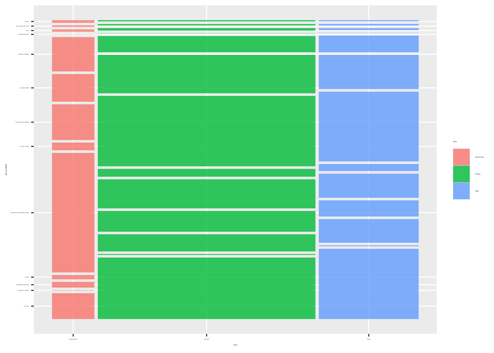
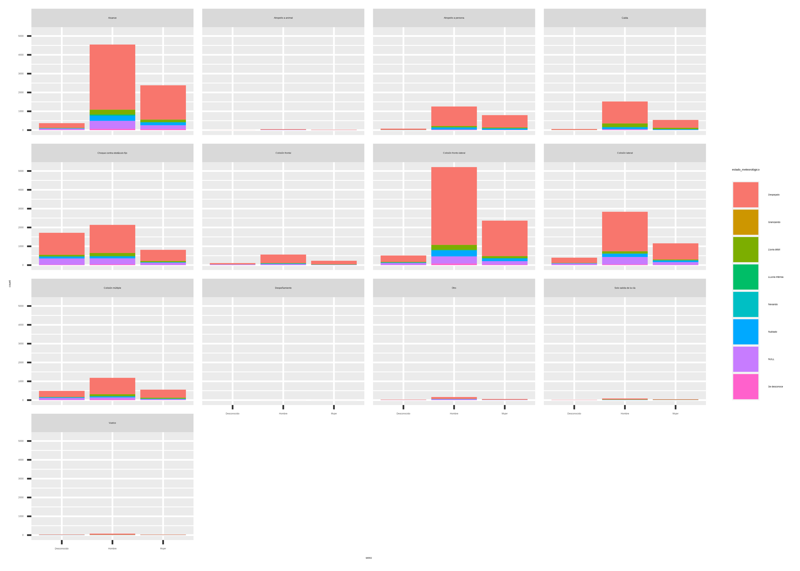
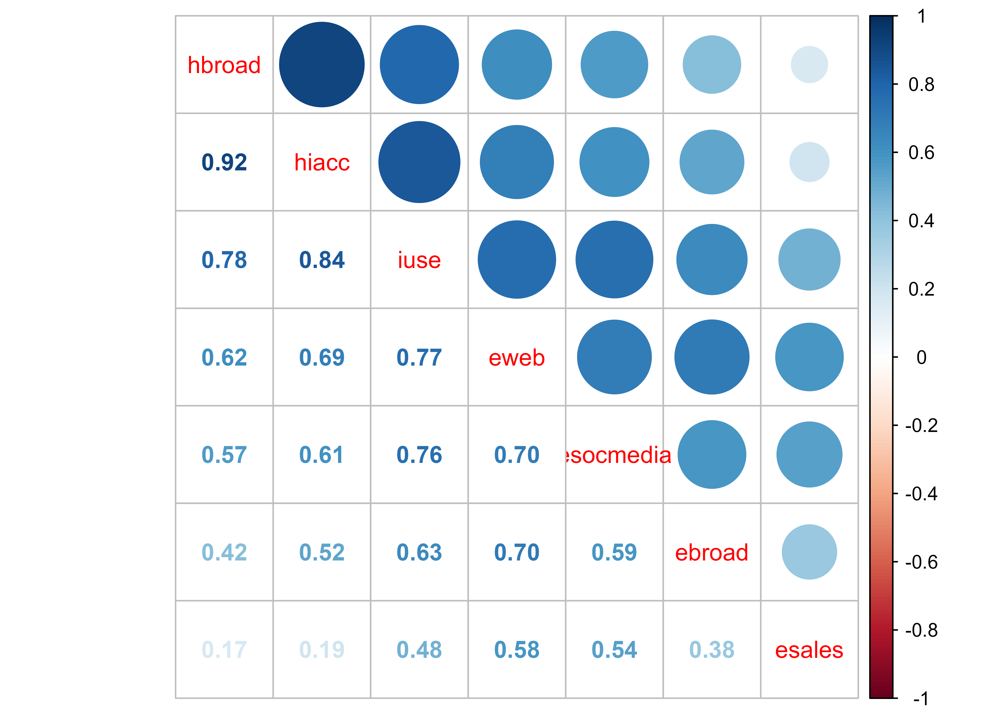

Capítulo 7 Análisis exploratorio de datos
Emilio L. Cano
7.1 Introducción
El análisis exploratorio de datos (AED), y en particular su visualización, es el primer análisis que se debe hacer sobre cualquier conjunto de datos. El AED se realiza mediante dos herramientas: los resúmenes numéricos y las visualizaciones gráficas. La “historia” que nos esté contando el gráfico de los datos, nos guiará hacia las técnicas de aprendizaje estadístico más adecuadas. Incluso, en muchas ocasiones será suficiente el AED para tomar una decisión sobre el problema en estudio.
7.1.1 El cuarterto de Anscombe
Un ejemplo clásico de la importancia del AED y, concretamente, las representaciones gráficas es el “Cuarteto de Anscombe” (Anscombe 1973),
el cual está compuesto por 11 filas de 8 variables numéricas que conforman 4 conjuntos de datos (disponibles en el objeto anscombe), con los mismos resúmenes estadísticos pero que propiedades muy distintas, lo que se ve fácilmente cuando se representa en forma gráfica. Si se calcula, por ejemplo, media y la desviación típica de cada variable se observa que son prácticamente iguales. Incluso los coeficientes de correlación de cada x con su y son también prácticamente idénticos.
library(dplyr)
anscombe |> summarise(across(.fns = mean))
#> x1 x2 x3 x4 y1 y2 y3 y4
#> 9 9 9 9 7.5009 7.5009 7.5 7.5009
anscombe |> summarise(across(.fns = sd))
#> x1 x2 x3 x4 y1 y2 y3 y4
#> 3.316 3.316 3.316 3.316 2.031 2.031 2.030 2.030Sin embargo, la Fig. 7.1 muestra que, a pesar de tener medias y desviaciones típicas prácticamente iguales, los datos son muy diferentes.
Figura 7.1: Representación de las variables del cuarteto de Anscombe
Si en el análisis por separado ya se ve la necesidad de hacer un gráfico,
ésta es más evidente cuando se analizan las variables conjuntamente. La
Figura 7.2 muestra los cuatro gráficos que constituyen
“El cuarteto de Anscombe”, y que se puede obtener de la propia ayuda del
conjunto de datos (example(anscombe)). La línea de regresión que se ajusta
es prácticamente la misma, y los coeficientes de correlación entre las variables X e Y de los cuatro gráficos, idénticos: 0.8163.
Es evidente que la relación entre las variables es muy distinta en cada uno
de los casos, y si no se visualizan los datos para elegir el mejor modelo
de regresión y después interpretarlo, se pueden tomar decisiones
erróneas. El cuarteto de Anscombe es muy ilustrativo, al igual que The Datasaurus Dozen: (Matejka and Fitzmaurice 2017) en https://www.autodeskresearch.com/publications/samestats.
Figura 7.2: Los cuatro gráficos que constituyen El cuarteto de Anscombe junto con un ajuste lineal
7.1.2 Conceptos generales
Muy brevemente, se presentan una serie de conceptos esenciales para la mejor comprensión de este manual8. Los datos que se analizan, provienen de una determinada población, y no son más que una muestra, es decir, un subconjunto de toda la población. La Estadística Descriptiva se ocupa del AED en sentido amplio, que se aplica sobre los datos concretos de la muestra. La Inferencia Estadística (véase Capítulo 12 hace referencia a los métodos mediante los cuales, a través de los datos muestrales, se toman decisiones, se analizan relaciones, o se hacen predicciones sobre la población. Para ello, haremos uso de la Probabilidad (véase Capítulo 11) aplicando el método más adecuado. Además, será muy importante considerar el método de obtención de la muestra (véase Capítulo 13 que, en términos generales, debe ser representativa de la población para que las conclusiones sean válidas. La Fig. 7.3 representa la esencia de la Estadística y sus métodos.

Figura 7.3: La esencia de los métodos estadísticos
Por otra parte, los individuos de una población vendrán clasificados por un carácter o fenómeno estadístico. Éstos pueden ser de dos tipos:
Cuantitativos (se pueden medir o contar). Se denomina variable a cualquier fenómeno estadístico que pueda expresarse en valores numéricos. Se clasifican como variables discretas, (se puede contar el número de valores que toma) y continuas (pueden tomar cualquier valor en un intervalo dado).
Cualitativos (no se pueden expresar como un número). Se denomina variable cualitativa, atributo o factor a cualquier fenómeno estadístico que indica una cualidad o atributo. Éstas pueden tener varios niveles o solo dos (dicotómicas). Si en una variable categórica se pueden ordenar las categorías, entonces tenemos variables ordinales.
7.1.3 Componentes de un gráfico y su representación en R
De los diferentes sistemas que dispone R para representar gráficos (los “base”, paquete graphics, y los “grid”, paquete lattice (Sarkar 2008)),
este capítulo se centra en el paquete ggplot2 (Hadley Wickham 2016a), que forma parte del tidyverse, por su amplio uso y popularidad.
El flujo de trabajo con ggplot2 se puede resumir en los siguientes pasos:
Proporcionar una tabla de datos a la función
ggplot. Es el primer argumento (data) y se puede utilizar el operador pipe.Proporcionar las columnas de la tabla de datos que serán representadas en el gráfico. Este será el segundo argumento (
mapping) de la funciónggplot, y se especifica con la funciónaes(aesthetics) como una lista de pares aesthetic = variable, de forma que el elemento especificado como aesthetic será “mapeado” a los valores de la variable. Esta especificación se puede hacer también en las funciones que añaden capas, que se explican a continuación. Los aesthetics más comunes (y para muchos tipos de gráficos obligatorios) sonxey, es decir, las variables que se usarán para el eje horizontal y el eje vertical respectivamente. Además, se pueden especificar variables para el color, el tamaño, el símbolo de los puntos, el tipo de línea, el texto, y otros específicos del tipo de gráfico. Los aesthetics se pueden especificar también de forma “fija” (sin depender de ninguna variable) fuera de la funciónaes.Añadir las capas del gráfico con los geoms, es decir, los objetos geométricos que representan a cada variable. Esto se indica con el operador
+, como si se “sumasen” componentes al gráfico mediante funcionesgeom_xxx.Añadir otras capas al gráfico, por ejemplo, una capa de etiquetas del gráfico (función
labs), de ejes, para modificar los ejes y leyendas creados por defecto (funcionesscale_*_xxx), para crear nuevas variables a representar basadas en los datos (funcionesstat_xxx).Añadir un tema al gráfico, por ejemplo, en blanco y negro, o con especificaciones concretas como el posicionamiento de la leyenda.
Añadir “facetas” (facets). De esta forma se divide el gráfico en varios subgráficos basándose en los valores de una o más variables discretas (normalmente categóricas).
7.2 Análisis exploratorio de una característica
7.2.1 Variables cualitativas
El resumen numérico de variables cualitativas se muestra en la tabla de frecuencias,
la cual se puede representar con un gráfico de barras o con un gráfico
de sectores9. Por ejemplo, el conjunto de datos accidentes2020_data
disponible en el paquete CDR, describe los datos de accidentes de tráfico en la Ciudad de Madrid registrados por Policía Municipal con víctimas y/o daños al patrimonio. Entre sus variables, contiene la variable cualitativa tipología del accidente tipo_accidente. Un resumen puede obtenerse tanto con la función table()
como con el paquete dplyr, como se vio en la Sección ??:
En variables cualitativas, llamamos a la categoría más frecuente moda de la variable.
library(CDR)
library(dplyr)
accidentes2020_data |>
count(tipo_accidente) |>
mutate(prop = 100 * n / sum(n))
#> tipo_accidente n prop
#> 1: Alcance 7294 22.4936010
#> 2: Atropello a animal 75 0.2312887
#> 3: Atropello a persona 2127 6.5593487
#> 4: Caída 2118 6.5315940
#> 5: Choque contra obstáculo fijo 4667 14.3923274
#> 6: Colisión frontal 899 2.7723810
#> 7: Colisión fronto-lateral 8081 24.9205909
#> 8: Colisión lateral 4386 13.5257656
#> 9: Colisión múltiple 2231 6.8800691
#> 10: Despeñamiento 2 0.0061677
#> 11: Otro 251 0.7740463
#> 12: Solo salida de la vía 151 0.4656613
#> 13: Vuelco 145 0.4471582Para representar el gráfico de barras con la función ggplot() se añade la función geom_bar() (ver Fig. 7.4).
library(ggplot2)
accidentes2020_data |>
ggplot() +
geom_bar(aes(y = tipo_accidente), fill = "pink")
Figura 7.4: Gráfico de barras con ggplot2
El código anterior es la forma más básica de hacer un gráfico con ggplot2.
Opciones más avanzadas pueden encontrarse en el libro
R for Data Science (H. Wickham and Grolemund 2016).
Ya se ha comentado que los gráficos de sectores no se recomiendan a menos que se incluya información numérica. El paquete ggstatsplot realiza gráficos que incluyen análisis estadísticos. Por ejemplo, la función ggpiestats() proporciona un gráfico de sectores con algunos tests estadísticos (ver la ayuda de la función) y podría utilizarse para determinar en qué medida un conjunto de 80 ayuntamientos de distinto signo político presta o no un determinado servicio serv (ver el conjunto de datos en el paquete del libro ?CDR::ayuntam). El siguiente código produce el gráfico de la Figura 7.5.
library(ggstatsplot)
ayuntam |>
ggpiestats(x = serv)
Figura 7.5: Gráfico de sectores con tests. Prestación o no de un determinado servicio X
Una alternativa a los gráficos de sectores son los waffle charts (gráficos de gofre, o de tableta de chocolate). La siguiente expresión produce el gráfico de la Figura 7.6 usando el paquete waffle. Con el argumento use_glyph se pueden incluir iconos en vez de cuadrados.
library(waffle)
freq <- ayuntam |>
count(serv)
m <- setNames(freq$n, freq$serv)
waffle(m,
rows = 4, colors = c("red", "green")
)Figura 7.6: Gráfico waffle: Prestación o no de un determinado servicio X por parte de 80 ayuntamientos
7.2.2 Variables cuantitativas
Los estadísticos descriptivos más importantes que se hallan en un AED se dividen en tres grandes grupos:
Medidas de posición, que su vez se divide en (i) central: media (
mean()), mediana (median()) y moda y (ii) no central: cuantilesquantile(), mínimo (min()) y el máximo (max()).Medidas de dispersión. Las más importantes son: varianza (
var()), desviación típica (sd()), rango intercuartílico (IQR()), desviación absoluta mediana (mad()) y coeficiente de Variación (sd(x)/mean(x))Medidas de forma: asimetría (skewness) y aplanamiento (kurtosis)
La función summary() de R base es una función de las llamadas “genéricas”
y solo aborda las medidas de posición.
library(CDR)
summary(renta_municipio_data$`2019`)
#> Min. 1st Qu. Median Mean 3rd Qu. Max. NA's
#> 4053 9914 11595 12247 13690 32183 5697Sin embargo, los estadíscos descriptivos suelen presentarse juntos “describiendo” al conjunto de datos. Existen distintos paquetes, como summarytools, que proporcionan un resumen completo de un vector numérico con la función descr() y de un conjunto de datos completo (ver opciones del paquete.)
library(summarytools)
renta_municipio_data |>
select(`2019`) |>
descr()
#>Descriptive Statistics
#>2019
#>N: 55273
#> 2019
#>----------------- ----------
#> Mean 12246.84
#> Std.Dev 3562.94
#> Min 4053.00
#> Q1 9914.00
#> Median 11595.00
#> Q3 13690.50
#> Max 32183.00
#> MAD 2742.81
#> IQR 3776.25
#> CV 0.29
#> Skewness 1.82
#> SE.Skewness 0.01
#> Kurtosis 5.77
#> N.Valid 49576.00
#> Pct.Valid 89.69La representación de la tabla de frecuencias de una variable continua
es el histograma. En el caso de las
variables continuas, para representarlo, se cuenta el número de observaciones (frecuencia) por intervalos (bins). Una posible regla sería el método de Sturges10, que se puede hallar con la función nclass.Sturges().
Para obtener tabla de frecuencias de la renta neta media per cápita en 2019 usando el número de intervalos según la regla de Sturges se haría:
renta_municipio_data |>
mutate(clases_sturges_renta = cut(`2019`,
breaks = nclass.Sturges(`2019`)
)) |>
count(clases_sturges_renta)Sin embargo, esta regla no siempre es la más apropiada, como se verá en la Sección 37.3, pues debe estudiarse bien la naturaleza de la variable a analizar.
El histograma proporciona mucha información sobre la variable: (i) si es aproximadamente simétrica, (ii) si tiene forma de campana (se parece a la distribución Normal), (iii) si hay valores extremos y cómo son de frecuentes, y (iv) si puede haber mezcla de poblaciones (más de una moda).
La función geom_histogram() del paquete ggplot2 añade una capa con un
histograma al gráfico. El color de las barras se controla con el aesthetics fill, y la altura puede representar las frecuencias absolutas (recuentos) o
relativas (proporciones). El número de intervalos se indica con el argumento
bins, o alternativamente la anchura de intervalo con bin_width, véase la Fig. 7.7.
p <- renta_municipio_data |>
tidyr::drop_na() |>
ggplot(aes(`2019`))
h1 <- p + geom_histogram(color = "yellow", fill = "pink")
h2 <- p + geom_histogram(
color = "yellow", fill = "pink",
bins = nclass.Sturges(renta_municipio_data$`2019`)
)
h3 <- p + geom_histogram(color = "yellow", fill = "pink", bins = 20)
library(patchwork)
h1 + h2 + h3
Figura 7.7: Histogramas de la renta neta media per cápita en 2019 con distintos bins. Iquierda: bins por defecto (n=30); Centro: bins con la regla de Strurges; Derecha: bins = 20
Una representación alternativa al histograma es la línea de densidad, que sustituye las barras por una línea continua, generalmente suavizada. A continuación, se añade la linea de densidad a uno de los histogramas de la Fig. 7.7.
p + geom_histogram(aes(y = after_stat(density)),
position = "identity",
color = "yellow", fill = "pink"
) +
geom_density(lwd = 1, colour = 4)Figura 7.8: Histograma y linea de densidad de la renta neta per capita española en 2019
Otra representación gráfica muy útil de las variables continuas son el
gráfico de cajas y bigotes y el diagrama de violín, que se obtienen fácilmente combinando en ggplot() las capas geom_boxplot() y geom_violin() respectivamente (véase Fig. ??).
p <- renta_municipio_data |>
tidyr::drop_na() |>
ggplot(aes(x = 0, y = `2019`))
boxplot <- p + geom_boxplot(color = "yellow", fill = "pink")
violin <- p + geom_violin(aes(), color = "yellow", fill = "pink")
boxplot + violin
Figura 7.9: Boxplot y violin plot de la renta neta media por persona (€) en 2019
Otra visualización básica para una variable numérica es la visualización
secuencial de las observaciones, bien a través de puntos (geom_point()) o a través de líneas (geom_line()). El orden de las observaciones nos pueden indicar cuándo se ha producido un cambio u otros patrones.
7.3 Análisis exploratorio de varias características
En el apartado ?? se ha realizado un AED de variables aisladas, pero lo usual es incluir las relaciones entre otras variables dentro del AED. Además, en el caso de las variables numéricas se pueden obtener algunas medidas de resumen conjunto que indiquen la relación entre las distintas características. Las herramientas estadísticas utilizadas son: (i) las tablas de frecuencias conjuntas, que, en el caso de dos atributos, pueden ser tablas de doble entrada, con un atributo en filas y el otro en columnas, para determinar si existe asociación entre las variables, como se verá en el Capitulo 20; (ii) los resúmenes numéricos, como la covarianza, el coeficiente de correlación, coeficientes de asociacion, etc. y (iii) los gráficos en los que se puede representar más de una variable.
7.3.1 Variables cualitativas
El resumen numérico sigue siendo la tabla de frecuencias, en este caso conjuntas para los distintos niveles que toman las variables. Para dos atributos, se puede representar en forma de tabla de doble entrada. Este tipo de tabas se denominan tablas de contingencia (ver Capitulo 20).
El resultado de la función table() se puede utilizar dentro de las funciones prop.table() y addmargins() para obtener las frecuencias relativas, añadir las marginales, o ambas cosas. Para el ejemplo de la prestacion de servicio o no por parte de 80 ayuntamientos, table() podría utilizarse para dar respuesta a la siguiente pregunta: ¿La prestación pública del servicio X es independiente del signo político del Ayuntamiento o depende de dicho signo?
table(ayuntam$signo_gob, ayuntam$serv)
#>
#> No Sí
#> Avanzados 14 28
#> Ilustrados 6 32Aunque la representación gráfica más habitual siguen siendo los gráficos de barras:
p <- ayuntam |>
ggplot(aes(signo_gob, fill = serv))
frecuencias <- p + geom_bar()
proporciones <- p + geom_bar(position = position_fill())
frecuencias + proporcionesFigura 7.10: Grafico de barras de la prestación pública del servicio X por parte de 80 Ayuntamientos de distinto signo político. Iquierda: frecuencias absolutas. Derecha: frecuencias relativas.
Una visualización interesante de tablas de doble entrada son gráficos en los que
se representan las frecuencias conjuntas por medio de puntos cuyo área es proporcional a la frecuencia. La Fig. 7.11 muestra gráficamente la tabla de frecuencias conjunta de los atributos signo_gob y serv del conjunto de datos ayuntam.
library(gplots)
balloonplot(table(ayuntam$signo_gob, ayuntam$serv))
Figura 7.11: Representación gráfica de tabla de frecuencias con la función ballonplot()
Para representar más de dos factores a la vez en un único gráfico, se dispone de los gráficos de mosaico con la función mosaicplot() de R base, o bien el paquete
ggmosaic, que incluye una función geom_mosaic() para usar en gráficos ggplot2:
library(ggmosaic)
accidentes2020_data |>
ggplot() +
geom_mosaic(aes(
x = product(tipo_accidente, sexo),
fill = sexo
))
En cualquier caso, se pueden representar más variables creando “subgráficos” o
facetas (facets). Basta con añadir una capa al gráfico ggplot2
con la función facet_wrap y argumento facets una lista de variables
(categóricas o discretas) para cuyos valores queremos hacer un gráfico
distinto.
accidentes2020_data |>
ggplot(aes(sexo, fill = estado_meteorológico)) +
facet_wrap(vars(tipo_accidente)) +
geom_bar()
7.3.2 Variables cuantitativas
La descripción conjunta de variables numéricas se
puede resumir con el vector de medias (media de cada variable) y la
matriz de varianzas-covarianzas. La covarianza es una medida
del grado de dependencia lineal entre dos variables numéricas.
Si la covarianza es cero, no hay relación lineal (pero podría
ser otro tipo de relación, recuérdese el cuarteto de Anscombe).
Pero la covarianza es una medida que depende mucho de la escala
de las variables, y
es más fácil interpretar el coeficiente de correlación lineal (función cor()), que
está acotado entre -1 y 1. Cuanto más se acerque a 1 en valor absoluto,
más fuerte será la dependencia lineal.
Además, el cálculo de la matriz de correlación puede suponer un punto de partida
en las técnicas de reducción de la dimensionalidad, como en el análisis de componentes principales (ACP). Si se desea
calcular la matriz de correlación del conjunto de datos TIC2021,
que presenta las estadísticas de uso de las TIC en la Unión Europea 2021,
para llevar a cabo posteriormente un ACP (ver Capítulo XX) se puede utilizar el paquete corrplot, que proporciona una forma elegante y versátil de representar la matriz de correlaciones11.
library(corrplot)
mcor_tic <- cor(TIC2021)
corrplot.mixed(mcor_tic, order = "AOE")
La matriz de correlaciones se puede representar mediante “mapas de calor”
(heatmap), es decir, un cuadrado que representa las filas y columnas de
la matriz de correlaciones (variables) y donde el color de las celdas es
una gradación que depende del valor de las celdas. Un mapa de calor de la matriz de correlaciones guardada anteriormente, mcor_tic.
puede obtenerse con la expresión heatmap(mcor_tic).
En cuanto a los resúmenes gráficos, el diagrama de dispersion es el gráfico más adecuado. La función geom_point() de ggplot2 añade una capa con los puntos (x, y), que ya nos da una idea de la relación entre las variables, y permite interpretar
conjuntamente con el coeficiente de correlación. Se puede añadir una línea de regresión, incluida una banda de confianza, por diversos métodos (función geom_smooth() por defecto, una curva loess o gam dependiendo del número de filas).
Alternativamente a los puntos como objeto geométrico, se pueden representar líneas (geom_line()).
Por ejemplo, antes de llevar un ajuste lineal o de otro tipo con los datos airquality tal y como se hará en los capítulos XX, se podría hacer un AED
previo entre las variables Ozone y Temp con el gráfico de la Figura 7.12.
airquality |>
dplyr::select(Ozone, Temp) |>
ggplot(aes(x = Temp, y = Ozone)) +
geom_point() +
geom_smooth()Figura 7.12: Gráfico de dispersión del Ozono frente a la Temperatura
Un caso particular es cuando la variable explicativa es el tiempo. En este caso estaremos hablando de series temporales, y la representación con líneas es más adecuada (véase la Figura 7.13).
contam_mad |>
filter(nom_abv == "NOx") |>
group_by(fecha, nom_mag) |>
summarise(media_estaciones = mean(daily_mean, na.rm = TRUE)) |>
ggplot(aes(x = fecha, y = media_estaciones)) +
geom_line(aes(color = nom_mag)) +
geom_smooth(linewidth = 0.5, color = "black", se = TRUE) +
theme(legend.position = "none")
Figura 7.13: Concentración media semanal de NOx en las estaciones de medición de Madrid (enero 2011- marzo 2022)
7.3.3 Variables cualitativas y cuantitativas
Cuando se trabaja en un proyecto de ciencia de datos, lo normal es tener conjuntamente variables cualitativas y cuantitativas. Para representar conjuntamente ambos tipos de variables existen múltiples posibilidades, algunas de las cuales se enumeran a continuación, con el tipo de gráfico adecuado:
- Una variable numérica y una variable categórica: Gráficos de cajas o de violín para cada posible valor de la categórica (Figura 7.14), o bien gráficos de densidad para cada categoría (Figura 7.15).
contam_mad |>
na.omit() |>
filter(nom_abv == "PM10") |>
filter(between(fecha, left = as.Date("2022-03-10"), right = as.Date("2022-03-20"))) |>
ggplot(aes(zona, daily_mean)) +
geom_violin() +
geom_jitter(height = 0, width = 0.01) +
aes(x = zona, y = daily_mean, fill = zona)Figura 7.14: Comparación de los niveles de PM10 en las Zonas de la ciudad de Madrid a efectos de Calidad del Aire durante la Calima de marzo de 2022
library(ggridges)
contam_mad |>
filter(nom_abv == "NOx") |>
ggplot(aes(x = daily_mean, y = tipo, fill = tipo)) +
geom_density_ridges()
Figura 7.15: Comparación de densidades de NOx por tipo de estación de medición
- Dos variables numéricas y una variable categórica: Gráfico de dispersión de las numéricas, y mapeado del color por la categórica.
# periodo del estado de alarma
pm10_nox_mad <- contam_mad |>
na.omit() |>
filter(nom_abv %in% c("PM10", "NOx")) |>
filter(between(fecha, left = as.Date("2020-03-14"), right = as.Date("2020-06-30"))) |>
select(estaciones, zona, tipo, nom_abv, daily_mean, fecha) |>
tidyr::pivot_wider(names_from = "nom_abv", values_from = "daily_mean", values_fn = mean)pm10_nox_mad |>
ggplot(
aes(x = PM10, y = NOx, colour = tipo, size = zona)
) +
geom_point()
Figura 7.16: Grafíco de dipersión entre las variables, NOx, PM110, zona y tipo durante el estado de alarma en la ciudad de Madrid
- Más de dos variables numéricas y más de una categórica: gráfico de dispersión
y mapeado de las otras variables a otros aesthetics. Combinación de geometrías
y aesthetics (por ejemplo, añadir puntos con efecto jitter a un gráfico de cajas).
La función
ggpairspuede incluir también variables categóricas y mapearlas por ejemplo al color, consiguiendo una visualización muy rica.
En todos los casos anteriores, se pueden crear “facetas” para hacer un gráfico por cada combinación de variables categóricas, de forma que tengamos un buen número de variables representadas en un mismo “lienzo”, como en la Figura 7.17.
pm10_nox_mad |>
tidyr::drop_na() |>
ggplot(aes(y = NOx, x = PM10, colour = tipo, shape = zona)) +
geom_point() +
geom_smooth() +
facet_wrap(vars(estaciones))
Figura 7.17: Grafíco de dipersión entre las variables, NOx, PM110, zona y tipo por estación de monitoreo durante el estado de alarma en la ciudad de Madrid
RESUMEN
Análisis exploratorio de una característica
- El análisis exploratorio es una tarea fundamental antes de abordar cualquier otra técnica estadística.
- Las variables categóricas se resumen con tablas de frecuencias y gráficos de barras.
- Las variables discretas se pueden resumir también con tablas de frecuencias y gráficos de barras, pero si hay muchos valores distintos también pueden ser apropiados los histogramas.
- Las variables numéricas se pueden resumir con tablas de frecuencias por intervalos, medidas de posición y de dispersión, histogramas y gráficos de cajas.
- Los gráficos de cajas sirven además para identificar valores atípicos.
- Los gráficos secuenciales pueden proporcionar información sobre tendencias y otros patrones en los datos.
Análisis exploratorio de varias características
- Las variables cualitativas se pueden resumir con tablas de frecuencias conjuntas y su representación gráfica, y con combinaciones de gráficos de barras.
- La principal medida conjunta de dos variables numéricas es el coeficiente de correlación. Para más de dos variables se suelen representar en forma de matriz.
- El gráfico de dispersión es la representación básica para dos variables numéricas. Se pueden representar estos gráficos por pares en forma de matriz de gráficos.
- Para añadir más variables, se pueden “mapear” variables a aesthetics (tamaño, color, etc.), añadiendo más objetos geométricos, o bien añadiendo “facetas” (subgráficos) para cada variable o para cada posible valor de un variable cualitativa.
References
Para un análisis extenso de los conceptos aquí expuestos puede consultarse, por ejemplo, Montero Lorenzo (2007).↩︎
El gráfico de sectores no es recomendable ya que proporciona la misma información que el gráfico de barras y es mucho más difícil para el ojo humano distinguir ángulos que alturas.↩︎
Este es el método que utiliza por defecto la función
histde R base, que además redondea la amplitud del intervalo para facilitar la interpretación. Otra regla muy sencilla es tomar como número de intervalos entorno a la raíz cuadrada del número total de datos.↩︎Una gran cantidad de ejemplos puede verse ejecutado
example(corrplot).↩︎